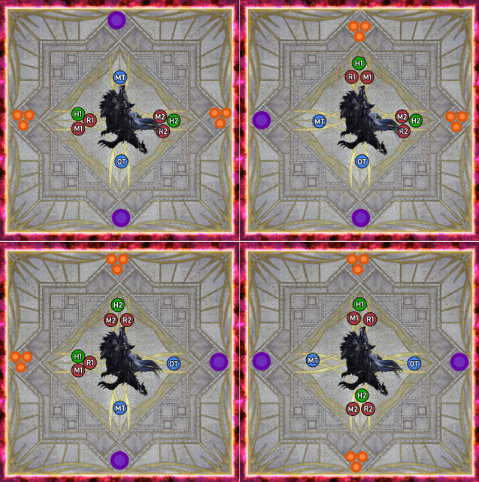
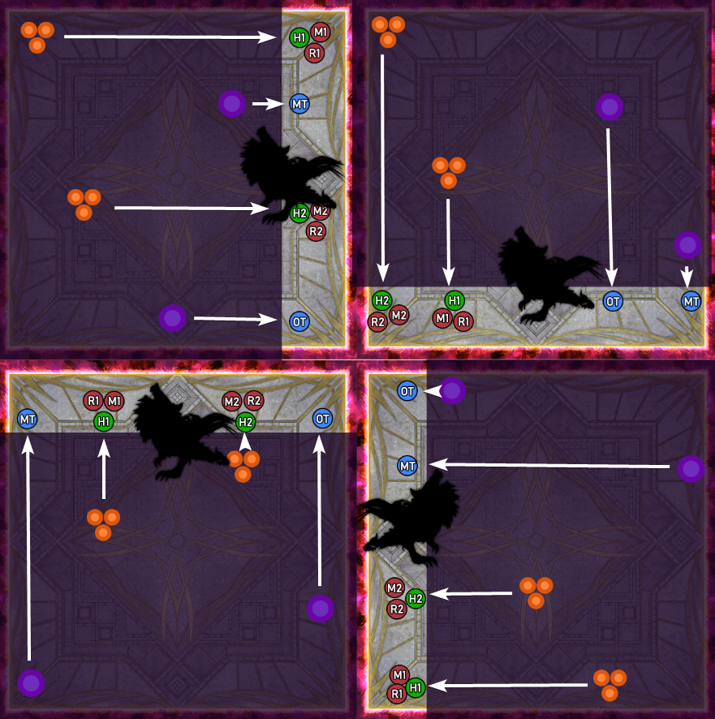

Index
- Terms and tokens
- Shadow of a Hero
- Dualspell
- Shadow Servant
- Voidgate (1)
- Umbral Orbs
- Shadow Warrior + Wall orbs
- TODO: Shackled Apart
- TODO: Voidgate Amplifier (Voidgate 2)
Terms and tokens
To make this guide a little easier, the image below will have the explanation of some terms and placeholders that I will be using in schematics.
Shadow of a Hero
At certain points throughout the fight you will have to handle a shadow of a hero, which is a shadowly clone that will be tethered to you. These can be created in 2 ways: When the boss uses Shadow Cleave (clock spread mechanic) and when the player walks into a Pitch Bog (see later in the guide).
Properties of the Shadow of a Hero
- Shared damage: When your clone takes damage, you take damage.
- When you come close to your clone, it will use a cone AoE that does lethal damage. While the cleave can only be triggered by the player it's tethered to, the cleave will damage other players and clones too.
- When the clone you are tethered to moves (the cast is called Shadowkeeper), it will spawn slightly behind you and in the same orientation as you. Immediately after moving it will use its damaging cleave.
- The clone counts as a player, which means it can be used for certain mechanics which require a player.
Dualspell
This mechanic will follow right after a Shadow Cleave, so the players will be tethered to Shadows of a Hero which will be in their clock positions.
1, 2, or 3 dots will appear on the players' shadow clones, indicating when the boss will use a small circular damaging AoE on the clones that also gives them a short magic vulnerability, but since the damage is shared, the tethered player will also take damage and get the magic vuln debuff.
At the same time as these dots are appearing, a stack marker will appear on one of the healers. This stack marker will damage everyone inside it 3 times.
If a player gets hit by the shared damage from their clone at the same time as they take a hit from the stackup AoE, they will die.
The way to solve this mechanic is to get the players to stack up, and to have individual players get out of the stack marker to avoid the blast corresponding with the number above their tethered shadow clone. After this, the players stack up close on the boss's butt, and to run through the boss to its front after the Shadowkeeper cast moves the clones.
A few important things to keep in mind: While it is important to stay away from your own clone to not trigger its cleave, it is also important to stay away from other clones, since the hits they take are small circular AoEs that will also damage anyone else in them. When stacking up at the boss' butt, it's important to not be in front or behind other players, and to all be facing the same direction. This is to make sure that the clones don't cleave eachother.
Shadow Servant

At certain points throughout the fight the Shadowkeeper will grab your shadow, this is indicated by the text "The shadowkeeper takes control of your shadow" appearing on screen and a weird shadow coming from your feet (see right). We will call this the shadow servant.
How does this work?
When the mechanic resolves, Shadowkeeper will spawn a clone of herself on your shadow servant. This clone will hold its sword in the same hand as the real Shadowkeeper, but she will be rotated depending on your shadow servant's orientation.
When the clone spawns, it will cleave all of the arena on the side it's holding its sword.
So how do I not cleave or kill everyone?
First you have to determine the clone's orientation and which side it will cleave. The pointy side at your feet will be its front, so that will be the way the clone is facing, and the side it will cleave will be the same side the real shadowkeeper is holding its sword, but relative to the shadow servant's orientation. (examples below)


Now that you have all this information, you and the 3 other people whose shadows got grabbed need to position yourself around the boss so your shadow servants cleave away from the boss (and everyone stacking under her to stay safe from the cleaves)

After this happens, the mechanic will repeat but with people who didn't get their shadow controlled before, while the people who just did it stack under the boss to stay safe.
Note that it is possible that some people will get a shadow servant twice, but that means that someone died right before or during the mechanic.
Voidgate (1)
Now that we know how to resolve shadow servants, we can solve this next mechanic, which adds voidgates.
Voidgates are basically just towers which require two players to be in them (Or Else).
The first set of voidgates will appear in the cardinal directions around the boss. 4 players will get a shadow servant first, this will either be all 4 DPS, or both tanks and both healers.
Both possibilities will be explained below.
DPS get shadow servants first
The tanks and healers will go to their Voidgate Pair spot but do not step in the voidgate quite yet. Next the dps determine which side their shadow servant will cleave, and go to the voidgate that lets their shadow servants cleave away from the boss. (see schematic below)
When the dps step into their voidgate, the tanks and healers step in as well, you let the first set of voidgates resolve, make sure the shadow servants are locked in place, and everyone immediately runs under the boss to be safe from the cleaves.

Next comes a set of intercardinal voidgates. In this set, the dps will get ready to go in the voidgate in their assigned clock position, and the tanks and healers will get shadow servants while getting ready to go in the voidgate clockwise from their assigned clock position.
In this set of voidgates, people will need to let the voidgates resolve first, before the tanks and healers quickly adjust to their shadow servants. Once the shadows are locked in place, everyone quickly gets to safety under the boss.
Keep in mind that it is possible that the boss cleaves the other side this time.
The example below has the boss cleaving her left side, and the shadow servants in the first image below are purely for illustration purposes


Tanks/Healers get shadow servants first
When the tanks and healers get shadow servants first, the DPS go to the towers in their assigned voidgate pairs spot while the tanks and healers adjust based on their shadow servants and their cleaves. Let the voidgates resolve, then run in to be safe from the cleaves.
The first part of the second half of this mechanic will be the same, everyone goes in their voidgates (T/H adjust), and let the towers resolve first. Then the DPS quickly adjust to their shadow servants' cleaves. Once again, when the shadows are locked in place, everyone quickly goes under the boss to be safe from the cleaves.
The important thing to remember for this mechanic is this: for the first set of voidgates, solve the shadow servant mechanic first before getting in the voidgate, for the second set of voidgates you have to let the voidgates resolve first before doing the shadow servant mechanic.Umbral Orbs
In this mechanic 2 sets of 3 orange orbs and 2 sets of 1 purple orb spawn.
The way this mechanic works is that each orb set will go to the nearest player. The orange orb sets need to be absorbed by a group of 2 DPS and 1 healer, and each purple orb needs to be absorbed by a tank.
The first time this mechanic appears, the orbs will appear in cardinal directions on the outside of the arena. The way we resolve this is by assigning each group and tank a priority direction in a way that all directions are covered by each group.
Group 1 and MT will get the priority W > N > S,
while group 2 and OT will get the priority E > S > N.
What what this means is that, for example, group 1 will first look at the west side of the arena for an orange orb set, if there are orange orbs there, they stand on the west side of the boss to absorb them. If there aren't any orange orbs there, they look to the north, no orange orbs there, they look south. The main tank will do this same thing, except for a single purple orb in those same directions. Group 2 and the OT use this exact same method except starting by looking east, then south, then north.
Some examples below: Note that the final Umbral orbs in the fight will spawn in the intercardinal directions, for them the order will be:
Group 1 and MT: NW > NE > SW
Group 2 and OT: SE > SW > NE
Shadow Warrior + Wall orbs
Shadow Warrior
Shadow Warrior itself is pretty straightforward, so I'll only go over it briefly.
The boss will spawn 4 shadow clones, one of which is tethered to her with a black shadowy tether on the ground. The tether will disappear and the clones will jump 5 times around her in a circle.
When the clones stop jumping, the clone that was tethered to her will use implosion in front of itself, only leaving a narrow strip of safe area behind it.
The easy way to solve this mechanic is to stand in the middle of the boss and to point your camera at the tethered clone before the clones start jumping around and to zoom out as far as you can. Next you ignore the first 4 jumps, and if the last jump is clockwise, you go to the wall clockwise from where your camera is pointing, if the last jump is counterclockwise, you go to the wall counterclockwise from where your camera is pointing.
Wall orbs
While the boss' shadow clones are jumping around, umbral orbs will appear. The way we handle these is by lining up in the safe strip behind the tethered shadow clone. When looking at the wall behind that clone, group 1 will line up with the leftmost set of orange orbs, while group 2 will line up with the rightmost set. MT will line up with the leftmost purple orb, while OT will line up with the rightmost purple orb.
Some examples below: 